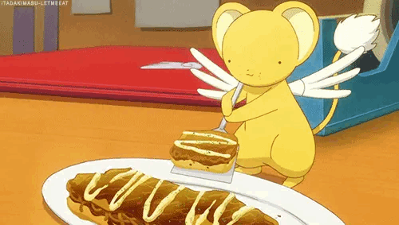

Kero's Vegan Friendly Recipes!
(aka Odin Recipes!)

Kero's Japanese Curry
*(original recipe)
Kero's Pomodoro Sauce
*(original recipe)
Vegan Mushroom and Tofu Lettuce Wraps
Vegan Katsu Curry
*(original recipe)
Vegan Korokke
*(original recipe)
Last updated: 21/03/2024